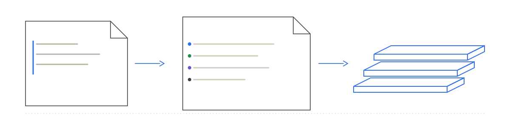

A workstation, a platform, a few profiles.
The platform pins its base image by digest. No commands, no hooks.
workstation.yaml
platformRef: centos-stream-10
profiles: [deskos-core, …]
bootc · OCI · deterministic
Declared intent becomes a typed plan and a bootable image. Same inputs, same artifact.
01 Compile
You describe the machine; DeskOS checks it, merges the layers and writes a generated Containerfile. That file is the whole output: read it, diff it, build it with podman. There is no runtime, no agent and no controller.
The platform pins its base image by digest. No commands, no hooks.
If two layers set the same value differently, both are named and nothing is built.
podman builds it once; the digest is what a machine runs and what gets signed.

deterministic · offline · no scripts · nothing runs on the machine
02 Platforms
Each platform starts from its own vendor's bootc image — never a derived one — and says what has actually been verified on it. What is not measured is written as not measured.
| Platform | Base | Composes | Image | Booted | Published |
|---|---|---|---|---|---|
| CentOS Stream 10 | centos-bootc | validated | CI | GNOME + session | quay.io/deskos |
| AlmaLinux 10 | almalinux-bootc | validated | CI | GNOME + session | quay.io/deskos |
| Fedora 45 | fedora-silverblue | validated | CI | CI, prerelease | none |
| RHEL 10 | rhel-bootc | validated | by the org | by the org | never |
RHEL-derived images are never published. Fedora is pinned to a prerelease compose; when the released compose lands, the pin moves and the measurement is repeated.
04 Install
The community images are published as bootable containers. Pull one, write a disk or an installer ISO, boot it. RHEL 10 is built and published by the organization that is entitled to it.
Installer ISOs for the community images are in progress: the
build, the install test and the download site are being prepared. Until then, the documented
path is the image and bootc-image-builder.
# what the repository ships
$ deskosctl validate
ok: 4 workstation(s) compose cleanly
# the typed plan, not a rendered guess
$ deskosctl plan --workstation deskos-core-centos-stream-10
# the build context, pinned to the base digest
$ deskosctl render --workstation \
deskos-core-centos-stream-10 --output ctx
# one image, one digest
$ sudo podman build -t localhost/deskos ctx05 Questions
No. DeskOS compiles workstations onto the base each vendor already ships.
No. DeskOS writes a Containerfile; podman builds it; bootc boots the image. The optional
deskos companion only reports what the image contains.
Same resources, same plan and same Containerfile. The image build is not bit-for-bit reproducible yet, because external repositories move — and the docs say so.
Being built: compiled from a published digest, installed in a VM to prove it works, then served from a download host. They will appear here when that evidence exists.